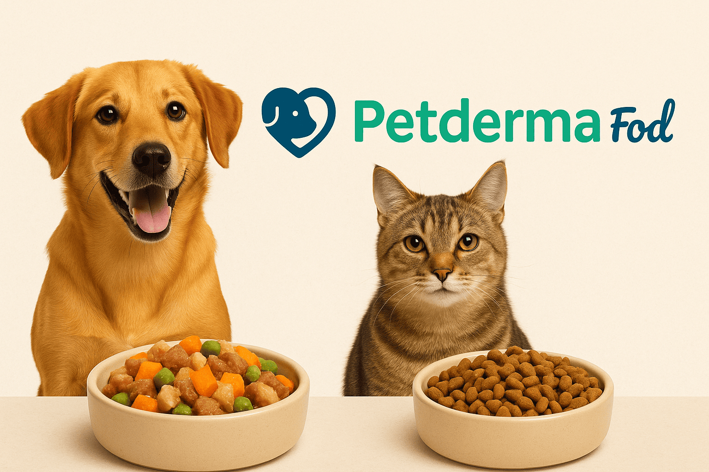
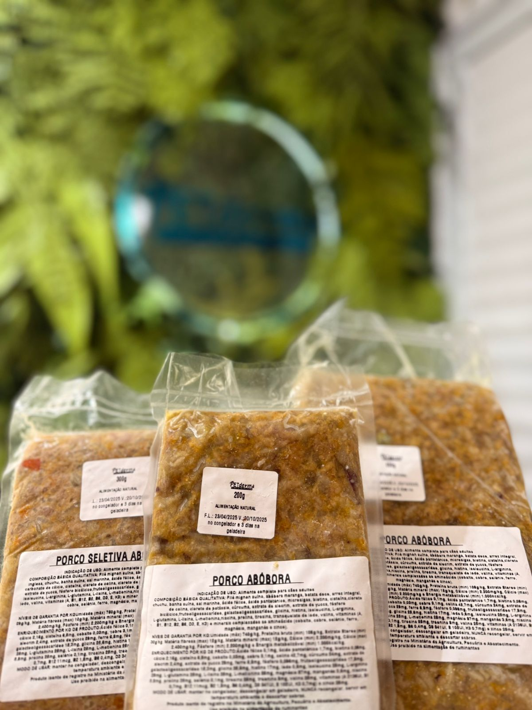
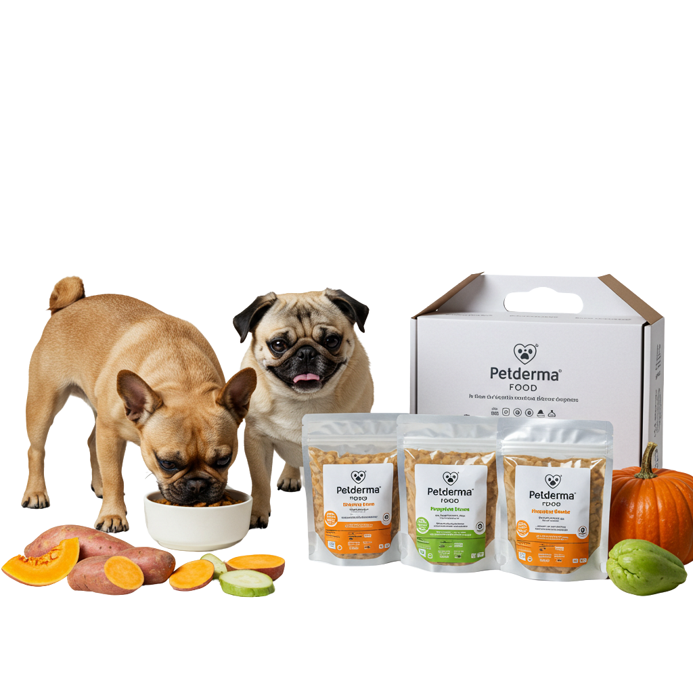

Como são desenvolvidas as fórmulas da Petderma Food?
Conheça o processo por trás da alimentação que cuida da pele e da saúde do seu pet.
Ler mais →Mais saúde, mais vitalidade
Fórmulas frescas, hipoalergênicas e balanceadas por quem entende de pele e saúde animal. Sem grãos, corantes ou conservantes — só o que o seu pet realmente precisa.

Fórmulas pensadas para pets com alergias alimentares e sensibilidades dermatológicas.
Apenas ingredientes naturais que promovem bem-estar, digestão leve e nutrição de verdade.
Alta palatabilidade, mais energia e suporte direto à saúde da pele e pelagem.

Por que Petderma Food
Cada fórmula é preparada com ingredientes naturais, balanceada por nutricionistas e aprovada por dermatologistas veterinários. Ideal para pets com alergias, sensibilidades e problemas de pele.
Ingredientes selecionados e balanceados para uma alimentação completa, leve e funcional.
Do preparo ao empacotamento, seguimos um padrão clínico rigoroso. Embalagens testadas para garantir frescor, segurança e estabilidade.
Receitas embaladas a vácuo, na medida certa. Sem preparo, sem desperdício — é só abrir e servir.
Todos os sabores são livres de ingredientes que causam inflamações ou alergias alimentares. Menos é mais.
Saúde em primeiro lugar
Criada por especialistas em dermatologia veterinária para apoiar pets com alergias alimentares e problemas de pele.
Sem corantes, conservantes, transgênicos ou grãos. Usamos só o essencial para uma nutrição limpa e funcional.
Pacotes com porções de 200g, 300g ou 400g, em planos de 10, 20 ou 30 dias para cada porte e necessidade.
Fórmulas de alta palatabilidade que agradam até os mais exigentes. Cheiro, cor e textura que despertam o apetite.
Pronto para servir
Cada porção é preparada com ingredientes naturais e embalada a vácuo para preservar o frescor. Escolha o sabor ideal e monte o kit perfeito para a rotina do seu pet.


Comece em 4 passos
Selecionamos os pontos essenciais para garantir a melhor experiência desde o primeiro dia com a Petderma Food.
Abóbora, mandioquinha ou seleção verde: cada fórmula atende necessidades específicas de digestão e sensibilidade.
Monte kits para 10, 20 ou 30 dias, de acordo com a rotina e o consumo do seu pet.
Embalagens de 200g, 300g e 400g, ideais para pets de pequeno, médio e grande porte.
Os produtos vêm embalados a vácuo. Basta manter refrigerado e servir conforme a rotina alimentar.
Dúvidas frequentes

Usamos apenas ingredientes 100% naturais como abóbora, mandioquinha, chuchu, ervilha, proteína de lombo suíno e banha suína. Sem grãos, corantes ou conservantes.
Sim! Por ser um alimento fresco e embalado a vácuo, o ideal é manter congelado. Após aberto, deve ser consumido em até 48h.
Sim! Nossas fórmulas foram desenvolvidas por especialistas em dermatologia veterinária com foco em pets com sensibilidades alimentares e dermatites.
Atualmente realizamos entregas em regiões específicas. Fale com nosso time no WhatsApp para verificar a disponibilidade na sua área.
A quantidade diária recomendada varia de acordo com o peso do seu cão. Veja a sugestão de consumo:
| Peso do pet | Quantidade diária recomendada |
|---|---|
| até 4 kg | 200 g |
| de 4 a 7 kg | 300 g |
| de 7 a 9 kg | 350 g |
| de 9 a 13 kg | 400 g |
| de 13 a 16 kg | 500 g |
| de 16 a 20 kg | 600 g |
📌 Importante: caso o seu pet pese mais de 20 kg, entre em contato pelo WhatsApp para uma recomendação personalizada.
Fale com nosso time e monte o kit ideal — rápido, sem complicação.
Conteúdo
Conheça o processo por trás da alimentação que cuida da pele e da saúde do seu pet.
Ler mais →Descubra o impacto da alimentação na mente e no bem-estar do seu animal.
Ler mais →
Entenda como escolher uma dieta que promove bem-estar de dentro pra fora.
Ler mais →